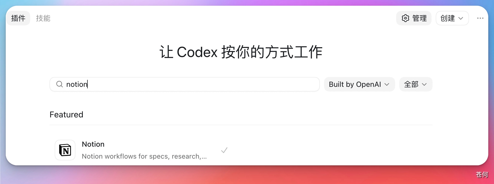
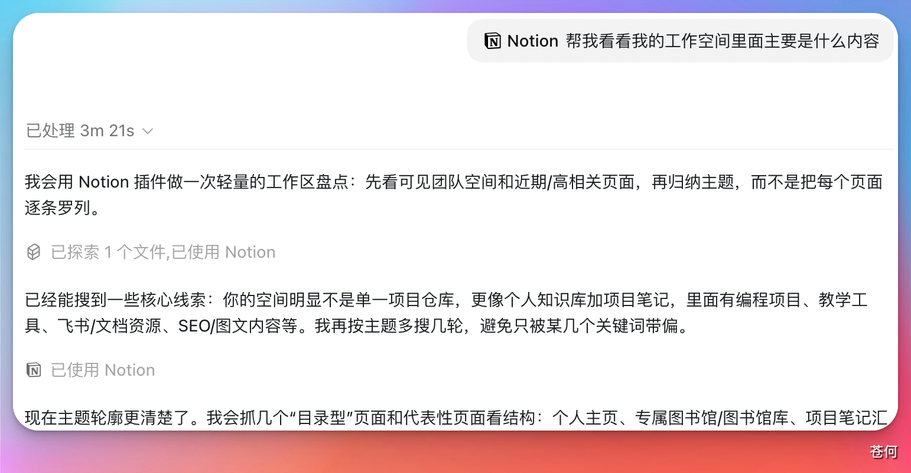
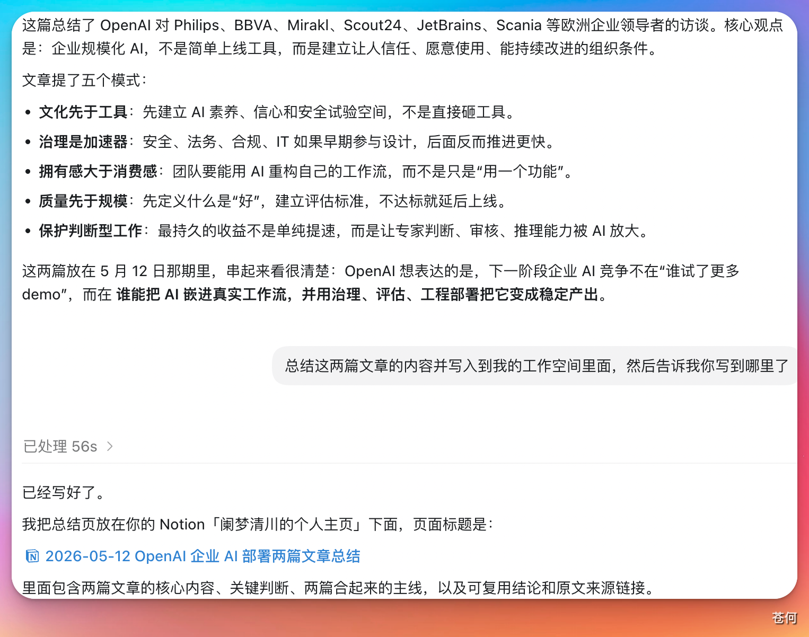
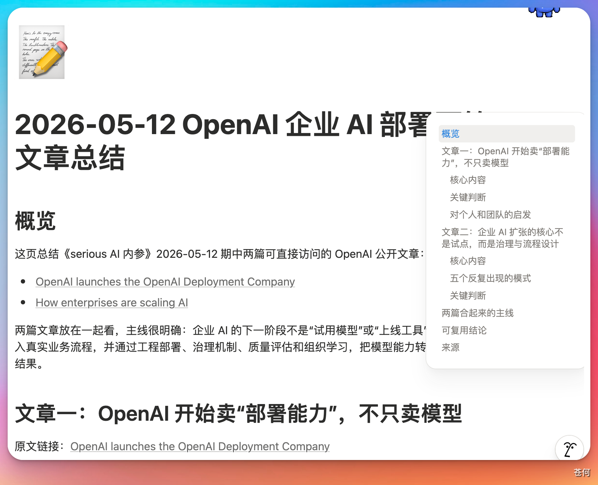

Notion 不只是一款笔记软件——它在 AI 时代完成了转型，成为了真正的 AI Native 产品。通过 Notion MCP，你可以让 Codex 直接读取、总结和写入你的 Notion 工作空间，实现真正的 AI 驱动知识管理。
1. 安装#
打开 Codex 插件市场，搜索 Notion，点击安装。

Notion 的权限涉及较多，安装时会跳转到浏览器，需要登录你的 Notion 账号并完成授权，让 Codex 可以通过 MCP 访问你的工作空间：
- 按照提示完成手动授权
- 授权成功后系统会提示返回 Codex
- Codex 自动完成配置
设置完成后，直接用 @ 调用 Notion 插件即可。

2. 如何使用#
读取工作空间内容#
先让 Codex 调用 Notion MCP，验证它能否正常读取你的工作空间内容。成功返回说明连接没有问题：

读取其他工作空间#
如果你加入了其他人的工作空间，只要对方提供了对应的 API 文档，把文档给 Codex，让它完成连接操作即可。
下图是让 Codex 查看我加入的一个工作空间昨天更新的内容，在授权范围内，读取完全正常：

总结与写入#
读取到内容之后，可以让 Codex 直接进行总结。如果对话中产生了不错的想法，也可以让它直接写入到你的 Notion 工作空间，完成后会返回一个写入成功的链接：

点击链接跳转到 Notion 查看写入结果，内容完全正常：

总结#
Notion MCP 让 Codex 真正成为你知识管理的助手——不只是聊天，而是可以读取、理解、写入你的工作空间。对于重度 Notion 用户来说，这是一个值得上手的组合。